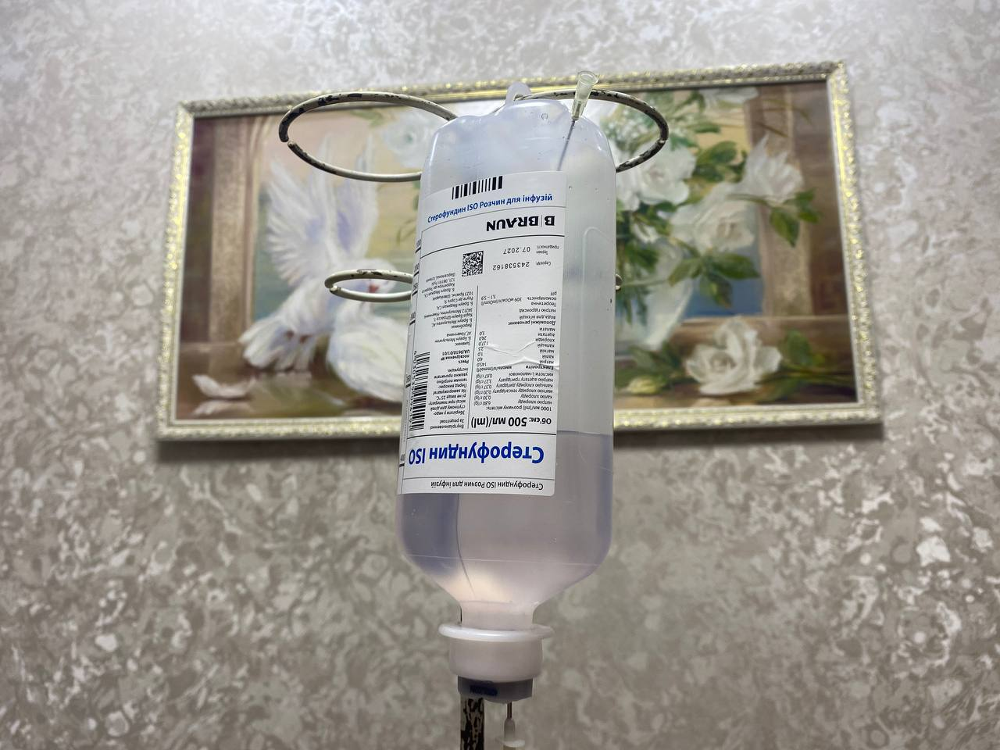

+380(97) 369 76
65
+380(97) 369 76
65Вывод из запоя на дому в Запорожье
Вывод из запоя на дому безопасен с помощью капельницы от алкоголя.
Работаем в Одессе, Киеве, Львове, Харькове, Днепре, Запорожье, Черноморске


Бесплатная консультация, работаем круглосуточно 24/7
Вывод из запоя на дому безопасен с помощью капельницы от алкоголя.
Работаем в Одессе, Киеве, Львове, Харькове, Днепре, Запорожье, Черноморске
Вывод из запоя на дому - это комплекс мероприятий которые проводит врач нарколог или же врач терапевтического профиля имеющий опыт работы в наркологической сфере или же отделениях неотложной скорой помощи и реанимации. Вывод из запоя на дому проводят с помощью капельницы от алкогольной интоксикации с последующей таблетированной терапией. Что бы вывести из запоя на дому в Запорожье вам нужно обратиться в наркологическую медицинскую службу UmbrellaPlus “Безопасная наркология”. Нарколог Запорожья приезжает к вам домой со всеми необходимыми медикаментами для снятия острой или хронической алкогольной интоксикации с последующим купированием похмельного синдрома. С помощью капельницы от алкоголизма удается снять патологическую тягу к спиртному а так же нормализовать общее состояния больного. Вывод из запоя на дому в Запорожье проводится полностью анонимно и конфиденциально. Что бы проконсультироваться с хорошим наркологом в Запорожье позвоните по номеру 050-021-69-57.
Что бы вывести из запоя дома первое что нужно сделать это исключить любое употребление спиртного. Ни в коем случаи нельзя опохмеляться или принимать спиртсодержащие лекарственные средства. Лучшим средством для вывода из запоя на дому будет капельница от алкоголя. В Запорожье медицинский центр UmbrellaPlus “Безопасная наркология” занимается лечением алкоголизма , выводом из запойного состояния любой сложности а так же кодированием от алкоголизма. Хорошие наркологи Запорожья проконсультируют вас в телефоном режиме а так же дадут рекомендации по поводу вывода из запоя подручными средствами. Безопасно на дому выйти из запоя можно только с помощью квалифицированной медицинской помощи в которую водит капельница от алкоголя а так же таблетки для последующего самостоятельного лечения. Любой запой это бесконтрольный прием спиртного сопровождающийся патологической тягой к алкоголю. Обязательным условием при котором пациенты уходят в запойное состояние является не контролированный симптом опохмеления.
Прокапаться от алкоголя - это давний метод который использую для лечения острой или хронической алкогольной интоксикации а так же запойного состояния. Прокапаться от алкоголя нужно в тех случаях когда пациент не может самостоятельно остановить прием спиртных напитков , а так же если сам алкоголь имеет низкое качество. В случах когда пациент находится в состоянии длительной алкогольной интосикации ( в состоянии запоя) ему абсолютно показана капельница от алкоголя с последующей седацией и таблетированным лечением. Капельницу от алкоголя можно поставить на дому или в стационаре , главным плюсом в лечении острой или хронической алкогольной интоксикации с помощью инфузионной терапии является быстрый эффект а так же безопасность вывода из запойного состояния зависимого человека. Если пациент длительно употребляет то курс инфузионной терапии подбирается индивидуально с целью полной очистки организма пациента.
Прокапаться от алкоголя на дому - это проверенный и эффективный способ быстро и безопасно снять острую алкогольню интоксикацию , нормализовать работу всех органов и систем. Так как состав капельницы от алкоголя всегда обладает сильнейшим антиоксидантным и детоксикационным эффектом мы можем гарантировать быстрый вывод из запоя с последюущим восстановлением организма зависимого.Что бы прокапаться от алкоголя на дому в Запорожье вам следуюет обратиться за медицинской помощью в любую наркологическую клинику, наркологический центр или же в нашу наркологическую службу UmbrellaPlus " Безопасная наркология" . Для того что бы прокапаться от алкоголя на дому в Запорожье вам следуюет позвонить дежурному врачу наркологу по номеру 050-021-69-57. После заявки доктор приедет к вам в течении 60 минут , прокапает от алкоголя на дому с помощью препаратов для быстрого купирования абстинентного синдрома с последующим снятием патологической тяги к спиртным напиткам.
Выход из запоя - это порядок действий при котором пациент с помощью наркологической помощи или же самостоятельно используя народные методы лечения алкогольной интоксикации останавлиевает бесконтрольный и бесконечный прием спиртных напитков а так же купирует патологическое желание опохмелиться. Для того что бы выйти из запоя на дому безопасно - вам нужно позвонить врачу наркологу по номеру 050-021-69-57 для оказания экстренной медикаментозной наркологической помощи с целью легкого и быстрого выхода из запойного состояния. Помните что любой запой опасен для здоровья и даже жизни зависимого человека , только хороший нарколог в Запорожье может обеспечить качетвенное лечение любой алкогольной интоксикации а так же вывести пациента из запоя и остановить бесконечное похмелье с помощью капельницы от алкоголя.
Врач нарколог это специалист с высшим медицинским образованием который заниется изучением и лечением алкогольной и наркотической зависимсоти. Врач нарколог это узкий специалст который с помощью инфузионной терапии с нимает острую и хроническую алкогольную и наркотическую интоксикации с последующей нормализацией общего состояния больного. Приезд доктора нарколога в Запорожье происходит в течении 60 минут. Приезд нарколога домой является анонимным с целью полного сохранения личности и конфиденциальности пациетна. Вывод из запоя на дому с помощью капельницы от алкоголя это максимально безопасный метод в лечении любой интоксикации. У доктора всегда с собой есть полный набор всех необходимых препаратов для оказания любой экстренной , неотложной и плановой детоксикационной помощи с помощью капельницы от токсинов. Ничего докупать отедльно вам не нужно.
Капельница от похмелья - это самый быстрый способ для нормализации общего самочуствия после недлительного употребления спиртных напитков. Капельницу от похмелья можно поставить на дому или же в стационаре. Капельница от похмелья на дому - это самый эффективным метод при купировании острой алкогольной интоксикации в сравнении с народной медициной или же таблетированным лечением. Капельница от похмелья на сегодняшний день лучший выбор в симптоматическом лечении острой алкогольной интоксикации с помощью инфузии удается " почистить кровь " , вывести токсины из организма , нормализовать общее состояния, аппетит и сон , убрать тревожность. Плюсы капельница от похмелья в том что ее можно сделать на дому а через час уже быть “на ногах”.
Не забывайте что капельница от похмелья на дому сильно отличается от инфузионной терапии которую капают при длительном запои. Если употребление превышает два дня то капельница от похмелья не поможет и такому пациенту требуется оказать помощью с помощью капельницы от запоя. Такая капельница имеет сильновыраженный детоксикационный эффект с помощью которого удается снять длительную интоксикацию в следствии употребления спиртных напитков а так же наполнить организм пациента витаминами ,коферментами и аминокислотами, а гепатопротекторы и кардиопротекторы восстановят и поддержат адекватную работу печени и сердца.
Классический состав для капельницы от алкоголя это :
Стоимость вывода из запоя на дому в Запорожье начинается от 1499грн.
| Услуга | Цена |
|---|---|
| Лечение алкоголизма Запорожье | От 1499 грн |
| Вывод из запоя Запорожье | От 1499 грн |
| Вывод из запоя на дому Запорожье | От 1699 грн |
| Капельница от алкоголя Запорожье | От 1499 грн |
| Капельница от алкоголя на дому Запорожье | От 1699 грн |
| Лечение пивного алкоголизма Запорожье | От 1499 грн |
| Лечение женского алкоголизма Запорожье | От 1499 грн |
| Кодирование от алкоголизма Запорожье | От 3999 грн |
| Кодирование уколом Запорожье | От 3999 грн |
| Кодирование от алкоголизма уколом Дисульфирам | От 3999 грн |
| Кодирование от алкоголизма уколом Эспераль | От 5500 грн |
| Подшивка от алкоголя Запорожье | От 9999 грн |
| Кодирование по методу Довженко Запорожье | От 14999 грн |
Самый быстрый и эффективным метод для вывода из запоя на дому - это капельница от запоя с сильным детоксикационным составом. Помните что самостоятельные способы выхода из запоя на дому могут быть опасными для вашего здоровья без капельницы от алкоголя и врачебного контроля не всегда удается самостоятельно остановить " штопор " и вывести пациента из желания постоянного опохмеления. UmbrellaPlus “Безопасная наркология” это медицинская служба которая помогает качественно , безопасно и быстро выйти из длительного употребления или же запоя. В Запорожье мы помогаем в борьбе с алкоголизмом а так же гарантируем сто процентный плавный вывод из запоя, даже с самыми тяжелыми и “запущенными” пациентами.
Выведение из запоя на дому в Запорожье сегодня является комбинированным курсом комплексного лечения с помощью капельница от алкоголя с последующей психотерапевтической помощью. В сравнении с таблетированными и народными способами вывода из запоя без наркологической помощи мы можем увидить низкую эффективность а так же высокий процент осложнений которые возникают и могут быть не на шутку опасными для здоровья такого больного. Качественное выведение из запоя на дому в Запорожье может обеспечить вам медицинская служба UmbrellaPlus “Безопасная наркология”. Благодаря качественному составку капельницы от алкоголя и алкогольной интоксикации наши наркологи могут обеспечить вам высококвалифицированную наркологискую помощь с последующим снятием интоксикации и купированием патологической тяги к спиртному. Выведение из запоя на дому требует высоких навыков в сфере наркологической помощи. На дом для постановки капельницы от алкоголя у нас выезжают только самые опытные врачи имеющие опыт работы не только в наркологии но и в отеделения скорой помощи или реанимации.
Выведение из запоя на дому в Запорожье,проходит через три основных этапа лечения алкоголизма:
1.Вывод из запоя на дому с помощью постановки капельницы от алкогольной интоксикации.
Врач нарколог приезжает к вам домой - оценивает общее состояние пациента, проводит первичную дагностику в которую входит: измерение давления , пульса , сатурации , снятие кардиограммы. Если для капельницы от алкоголя нет противопоказаний то пациент проходит первичную инфузионную терапию прямо на дому.
2. Второй этап при выводе из запоя на дому - это кодирование от алкоголя на дому с помощью укола от алкоголизма. На втором этапе лечения алкогольной зависимости пациент проходит “кодирование от алкоголизма” с целью создания длительного отвращения к любым спиртным напиткам на психологическом и физичесокм уровне. Кодирование от алкоголизма необходимо в тех случаях когда пациент регулярно употребляет спиртные напитки или же уходит в запойные сосотояния. Пройти кодирование от алкоголя на дому с помощью укола можно только тогда когда у пациента было минимум пять дней полной трезвости.
3.Третий этап при выведении из запоя на дому - это обязательная психотерапия с работой над ложными убеждениями и закоренелыми привычками зависимых , формировании идеи пожизненной трезвости а так же закрепление полного отвращения к спиртным напиткам на психологическом уровне.
Вывести из запоя на дому это стандартная процедура с помощью капельницы от алкоголя с набором лекарственных средств имеющие индивидуальный состав и объем для каждого пациента находящегося в состоянии длительной алкогольной интоксикации. Лекарства в капельнице от алкоголя помогают снять симптомы похмельного синдрома , облегчить общее самочествие , нормализовать его аппетит и сон, а так же вернуть адекватное мышление и снять патологическое желание к постоянному опохмелению. Вывести из запоя на дому можно в тех случаях когда пациент не может добраться в специализированную клинику или наркологический центр для прохождения детоксикационнйо терапии. Важно помнить что капельницу от алкогольной интоксикации на дому можно ставить в тех случаях когда пациент не имеет тяжелых сопутствующих заболеваний а длительной запоя не привышает трех недель.
Основным противопоказанием к выведение из запоя на дому являются тяжелых острые или же хронические заболевания:
Такие пациенты требуют срочной госпитализации.
К народным методам самостоятельного вывода из запоя на дому можно отнести базовую медикаментузную терапию:
Мы категорически не рекомендуем заниматься самолечением так как под маской запоя может быть обострение тяжелых хронических заболеваний которые приводят к госпитализации и даже смерти больного. Что бы вызвать врача нарколога домой в Запорожье вам нужно позвонить по номеру 050-021-69-57.
Анонимно

"Ну в хлопців просто золоті руки й світла голова, мене капали Олексій та Владислав, буквально за декілька сеансів я наче заново народився, до цього пив більше 3х тижнів, не міг зупинитись, дуже радий що знайшов саме цих спеціалістів, всім рекомендую"
Анонимно
"В течение нескольких лет я злоупотреблял алкоголь, что привело к увольнению с работы и вызвало у меня мысли о суициде. Понимая, что такой образ жизни неприемлем, я обратился за помощью в клинику "Амбрела". Здесь я смог преодолеть свою зависимость от спиртного благодаря заботливым и опытным врачам, а также эффективной системе лечения. Спустя более года я полностью избавился от желания употреблять алкоголь, и теперь моя жизнь вернулась в норму. Я даже не приближаюсь к спиртному! Благодарю врачей клиники "Амбрела" за их помощь и заботу."
Анонимно
"Я обращался за помощью в различные клиники, пытаясь избавиться от своей зависимости от алкоголя, но без особых успехов. Никак не мог справиться с желанием прибегнуть к бутылке, пока друг не посоветовал мне обратиться в центр "Амбрелла". Я записался на прием и был поражен заботливым отношением к пациентам. Уже прошло два года, и теперь я смотрю на алкоголь с абсолютной равнодушием, активно занимаюсь спортом и улучшил отношения в семье. Благодаря центру "Амбрелла" моя жизнь была спасена от алкогольной зависимости!"
Анонимно

"Хочу выразить свою благодарность врачам из центра алкоголизма "Амбрела" за то, что они буквально спасли мою жизнь. В течение последнего года я сильно увлекался питьем, и все это привело к катастрофическим последствиям. Хотя я ходил на терапевтические сеансы, но безрезультатно. Тогда я нашел адрес клиники "Амбрела" в интернете, изучил отзывы и информацию о центре, и записался на прием. Там мне сразу предложили методику лечения, которая помогла не только справиться с физической ломкой, но и психической зависимостью от алкоголя. Не буду распространяться, скажу только одно - после пребывания в этой клинике я стал другим человеком, и навсегда забыл, что такое привкус алкоголя. Больше меня не тянет на это! Я искренне верю, что в центре "Амбрела" трудятся настоящие целители душ!"
Анонимно
"После сложного развода мой сын начал подавлять свою обиду и горе употреблением алкоголя. Он старался скрывать это от меня, но я, как мать, почувствовала, что что-то не так. В конечном итоге, ситуация стала критической. Моя знакомая посоветовала мне обратиться в клинику "Амбрела". Я была приятно удивлена их работой! Они помогли сыну преодолеть очередной период злоупотребления алкоголем, и с тех пор прошел уже более года, и он совсем не пьет."
Анонимно
"Благодаря вашей помощи, моя семья была спасена. Я с трудом уговорила мужа начать лечение, и последний каплей был пьяное ДТП. К счастью, в аварии никто не пострадал, но это был для него сигнал к действию. Он наконец согласился пройти курс лечения на дому, в стационар не хотел ложиться. Лечение было трудным, и были моменты, когда срыв был настолько близок, но благодаря вашему центру Амбрелла мы справились с этим."
Анонимно
"Для меня эта клиника стала настоящим спасением! Долгое время я упорно отказывался от лечения, уверен был, что со мной все в порядке. Но к счастью, семья уговорила меня попробовать. И сегодня я чувствую себя невероятно счастливым, осознавая, что мне абсолютно не нужен алкоголь. Огромное спасибо за помощь и поддержку, которые я получил здесь! Я благодарен вам за новую возможность жить полноценной и счастливой жизнью!"
Анонимно
"Выражаю благодарность ребятам, которые оказали мне помощь и не отвернулись. Уже 10 месяцев я остаюсь чистой. Благодарю за то, что помогли найти новый путь в моей жизни."
Приезд в течении 60 минут от момента поступления заявки
Наши филиалы есть во всех больших городах Украины.
Мы оказываем профессиональную доказательную медицинскую помощь. Гарантией является наше имя.
Номер телефона:
+380 (97) 369 76 65
+380 (50) 021 69 57
Адрес главного офиса: г. Харьков ул. Сумская 47
Офис вашего города нужно
уточнить
Работаем в: Одессе, Киеве, Львове, Харькове, Днепре,
Запорожье
Telegram: t.me/umbrellaplus
График работы: Круглосуточно